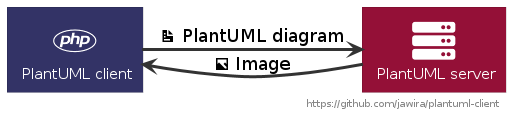

PlantUML client

Use a remote server to convert PlantUML diagrams to images. You don't need to install PlantUML locally!
Generate image from diagram
use Jawira\PlantUmlClient\Client;
use Jawira\PlantUmlClient\Format;
$puml = <<<PLANTUML
@startuml
Bob -> Alice : hello
@enduml
PLANTUML;
$client = new Client();
$svg = $client->generateImage($puml, Format::SVG);
Load diagram form disk
use Jawira\PlantUmlClient\Client;
$puml = file_get_contents('path/to/my-diagram.puml'); // load png file
$client = new Client();
$png = $client->generateImage($puml); // Default format 'png'
file_put_contents('path/to/my-diagram.png', $png); // save png to disk
How to install
composer require jawira/plantuml-client
Credits
- PlantUML Icon-Font Sprites - https://github.com/tupadr3/plantuml-icon-font-sprites